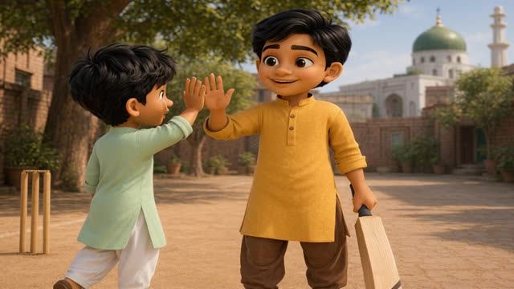
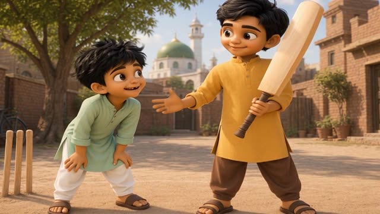
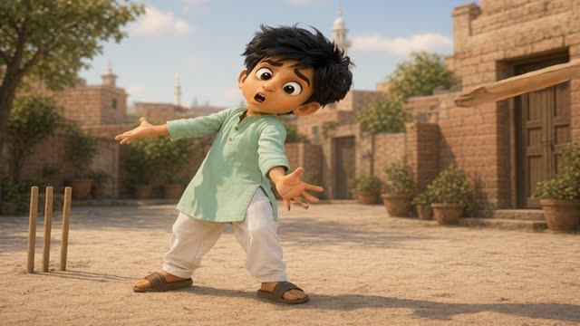
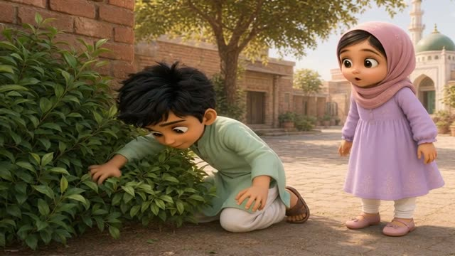
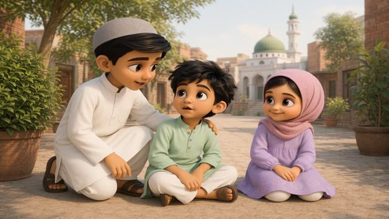
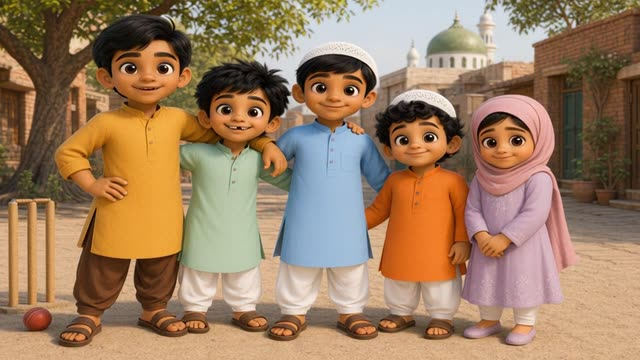

Episode 01
सच्चाई का इनाम · The Reward of Truthfulness
Huzaifa breaks his cousin's brand-new cricket bat — and hides it. Then Saad tells him why the whole of Makkah called the Prophet ﷺ As-Sadiq, the Truthful, even before prophethood.
Seerah Ibn Hisham · Sahih al-Bukhari 6094





What this proof of concept demonstrates
Authentic sources
Every lesson is retold from the Seerah with its reference shown on screen — nothing invented.
Their own language
Natural Hindi-Urdu the way children speak it — बैट, not बल्ला — so nothing needs translating.
End-to-end AI production
Screenplay, animation, voices, lipsync and quality checks — one automated pipeline, one theme line in.